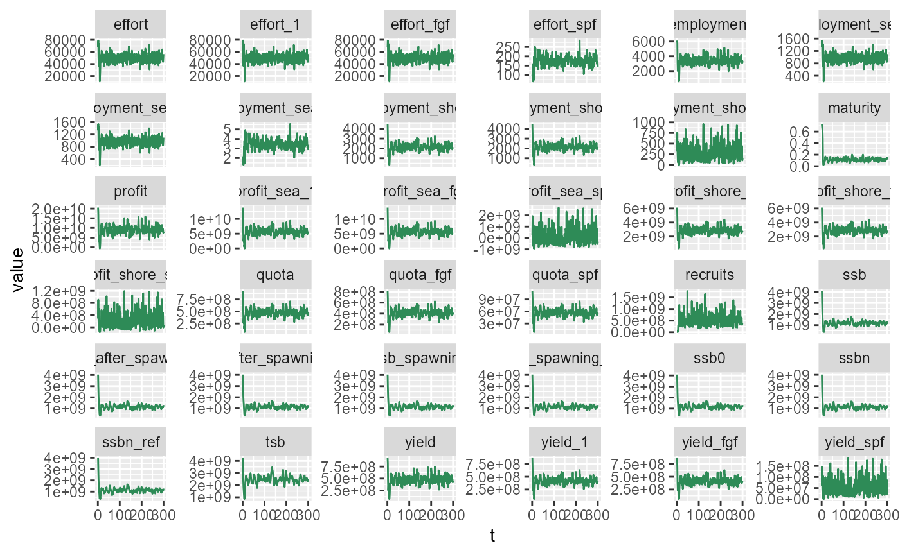
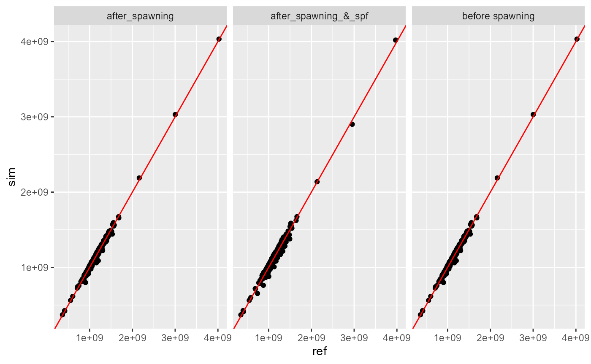
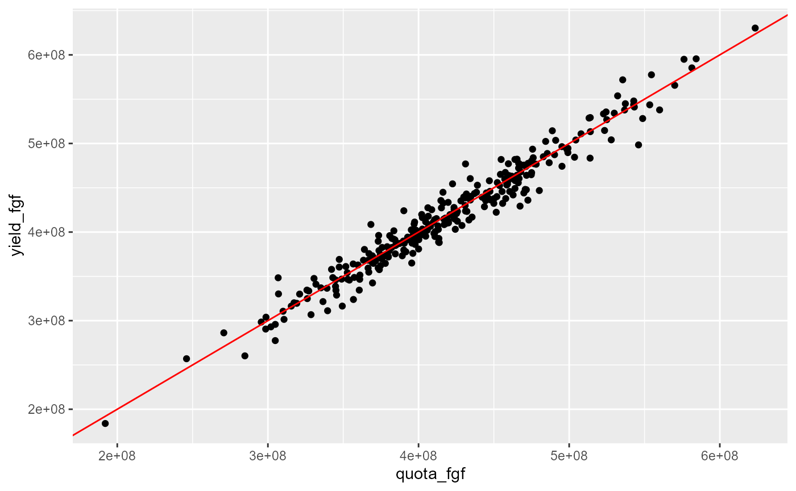
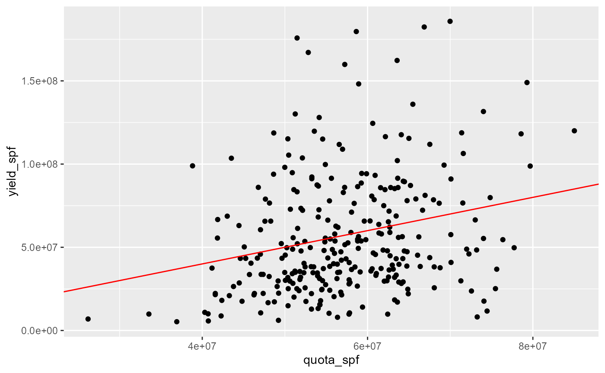
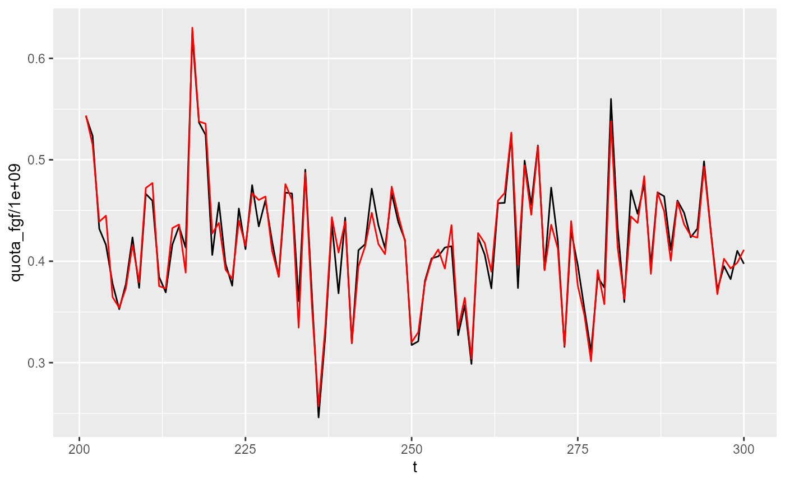

Fished Population and Stock Analysis
Jaideep
2026-04-09
fished_population_stock.RmdFishery System Setup
To simulate a fishery, i.e., a fished population, we need a Stock to harvest, a Fleet that harvests it, and a Fishery that manages this interaction. A Fishery also contains a hypothetical unfished population, separate from the actual population that we will fish.
Fish and population parameters are the same as in the case of an unfished population. Fleet parameters must be defined in a separate parameters file. Each fleet needs its own parameters file.
Let us now set up the fishery system using parameter files for fleet and fish, and inspect initial parameters.
# define parameter files
params_file_fleet = here::here("params/fleet_1_params.ini")
params_file_spf = here::here("params/fleet_1s_params.ini")
params_file_fish = here::here("params/cod_params.ini")
# Create a prototype fish to construct the population
fish = new(Fish, params_file_fish)
# fish$natural_mort_scalar = 1
# fish$setMortalityCurveEmpirical(here::here("data/naturalmort.spline.csv"))
fish$par$print()
# Craeate the fishery. Note that we do not need to explicitly create a population - it is contained within the fishery
fishery = new(Fishery, params_file_fish, fish);
fishery$par$print()Fishery Simulation
Configure the fishery:
- set contol parameters, such as harvest proportion and min size limit
- add the fleet to the fishery
- A fishery simulation requires an estimate of the carrying capacity of the ocean, which is computed by simulating a hypothetical unfished population to equilibrium. This unfished population is also implicitly included in the Fishery class.
- Initialize the fishery - this creates fish in the real fish population.
h = 0.22
fishery$set_harvestProp(h);
fishery$addFleet(params_file_fleet, T);
fishery$addSpawnerFleet(params_file_spf, T);
# Verify added fleet's fishing mortality curve
tibble(len=seq(10,200,length.out=100)) |>
mutate(Fref = purrr::map_dbl(len, ~fishery$get_fref(0, .x))) |>
ggplot(aes(x=len, y=Fref))+
geom_line()
# Simulate the Fishery's hypothetical unfished population to equilibrium
v = fishery$equilibriateNaturalPopulation(5.61, 2e6, 200);
fishery$set_superFishSize(2e6)
# Initialize the
fishery$init(1000, 0, 5.61);
v2 = fishery$equilibriateWithoutFishing(5.61, 200)
# Just a demo calc of the initial quota corresponding to the set defined harvest proportion. The Fishery will recalculate this every year.
quota = fishery$calc_quota(5.61);
cat("Quota: ", quota, '\n')## Quota: 1055554787Running and Visualizing Simulation
Simulate the fishery over time and visualize key outputs.
dat <- fishery$simulate(45, 0.22, 300, 1.93e3, 5.61, F, here::here("fishery_output/age_dist_pred.csv"))
dat |> head()## ssb yield employment profit effort tsb maturity
## 1 4080242964 927363199 6129.927 20524327767 68329.74 4232880983 0.7310345
## 2 3048017401 820637343 5783.368 17360578152 78841.21 3160629755 0.6836735
## 3 2188066516 426478212 3188.780 7706158084 50353.22 2271192442 0.6496350
## 4 1693229407 249489807 2002.748 3403463643 36486.71 1780251539 0.6122449
## 5 1465856031 334863394 2775.108 5169743373 53428.18 1551397601 0.4842105
## 6 1064121735 384839038 3414.467 5914578917 72931.49 1222707672 0.1346154
## quota recruits quota_fgf yield_fgf effort_fgf employment_sea_fgf
## 1 922502790 2.80e+07 811802455 866323777 68233.31 1332.7350
## 2 771960500 2.20e+07 679325240 673654648 78733.50 1537.8251
## 3 457304622 3.00e+07 402428068 375577228 50264.60 981.7697
## 4 260578876 1.00e+07 229309411 229737053 36421.07 711.3774
## 5 325508842 4.80e+07 286447781 289851189 53332.53 1041.6925
## 6 402625563 2.88e+08 354310496 375343826 72770.33 1421.3522
## employment_shore_fgf profit_sea_fgf profit_shore_fgf quota_spf yield_spf
## 1 4479.680 13852643110 6121916045 110700335 61039423
## 2 3483.406 9792701574 4726048035 92635260 146982696
## 3 1942.075 4860072896 2566507807 54876555 50900984
## 4 1187.949 2444111900 1509910749 31269465 19752754
## 5 1498.794 3102020345 1945431477 39061061 45012205
## 6 1940.868 4176805361 2564816830 48315068 9495212
## effort_spf employment_sea_spf employment_shore_spf profit_sea_spf
## 1 96.42929 1.883460 315.62918 262054835
## 2 107.70497 2.103697 760.03385 1931464596
## 3 88.62166 1.730961 263.20426 65315545
## 4 65.64078 1.282098 102.13966 -539155120
## 5 95.65145 1.868267 232.75392 -49306683
## 6 161.15935 3.147769 49.09886 -741324554
## profit_shore_spf ssb0 ssb_spawning ssb_spawning_ref ssb_after_spawning
## 1 287713777 4080242964 4033069534 4024892797 4033069534
## 2 910363947 3048017401 3030361786 3001699771 3030361786
## 3 214261837 2188066516 2188066516 2160628239 2188066516
## 4 -11403885 1693229407 1673476653 1677594674 1673476653
## 5 171598233 1465856031 1420843826 1446325500 1420843826
## 6 -85718721 1064121735 1054626523 1039964202 1054626523
## ssb_after_spawning_ref ssbn ssbn_ref yield_1 effort_1
## 1 4024892797 4019203542 3969542629 866323777 68233.31
## 2 3001699771 2901034706 2955382141 673654648 78733.50
## 3 2160628239 2137165532 2133189962 375577228 50264.60
## 4 1677594674 1673476653 1661959942 229737053 36421.07
## 5 1446325500 1420843826 1426794970 289851189 53332.53
## 6 1039964202 1054626523 1015806668 375343826 72770.33
## employment_sea_1 employment_shore_1 profit_sea_1 profit_shore_1
## 1 1332.7350 4479.680 13852643110 6121916045
## 2 1537.8251 3483.406 9792701574 4726048035
## 3 981.7697 1942.075 4860072896 2566507807
## 4 711.3774 1187.949 2444111900 1509910749
## 5 1041.6925 1498.794 3102020345 1945431477
## 6 1421.3522 1940.868 4176805361 2564816830Plot all output variables
p1 <- dat |>
mutate(t=1:n()) |>
pivot_longer(-t) |>
ggplot(aes(x=t, y=value)) +
geom_line(col="seagreen") +
facet_wrap(~name, scales="free_y")
p2 <- dplyr::bind_rows(
dat |> select(
sim = ssb_spawning, ref = ssb_spawning_ref,
) |>
mutate(group = "before spawning"),
dat |> select(
sim = ssb_after_spawning, ref = ssb_after_spawning_ref,
) |>
mutate(group = "after_spawning"),
dat |> select(
sim = ssbn, ref = ssbn_ref
) |>
mutate(group = "after_spawning_&_spf"),
) |>
as_tibble() |>
ggplot(aes(x=ref, y=sim)) +
geom_point() +
geom_abline(slope=1,intercept=1,col="red")+
facet_wrap(~group)
print(p1)
print(p2)
Quota (FGF) vs Yield
This plot compares the feeding ground fishery quota to the yield, excluding the first 10 iterations.
dat |>
slice(-(1:10)) |>
ggplot(aes(x=quota, y=yield)) +
geom_point() +
geom_abline(slope=1, intercept=0, color="red")
dat |>
slice(-(1:10)) |>
ggplot(aes(x=quota_fgf, y=yield_fgf)) +
geom_point() +
geom_abline(slope=1, intercept=0, color="red")
dat |>
slice(-(1:10)) |>
ggplot(aes(x=quota_spf, y=yield_spf)) +
geom_point() +
geom_abline(slope=1, intercept=0, color="red")
TSB vs Quota (FGF)
This plot shows the relationship between total stock biomass and feeding ground fishery quota. Slope should be equal to harvest proportion.
dat |>
slice(-(1:10)) |>
ggplot(aes(x=tsb, y=quota)) +
geom_point() +
geom_smooth(method="lm", se=F, formula = y ~ x-1) +
geom_abline(slope=h, intercept=0, color="red")
SSB Over Simulation
This plot tracks spawning stock biomass over the course of the simulation.
dat |>
mutate(t = 1:n()) |>
# filter(t > 200) |>
ggplot(aes(x=t, y=ssb/1e9)) +
geom_line()
dat |>
mutate(t = 1:n()) |>
filter(t > 200) |>
ggplot() +
geom_line(aes(x=t, y=quota_fgf/1e9)) +
geom_line(aes(x=t, y=yield_fgf/1e9), col="red") 